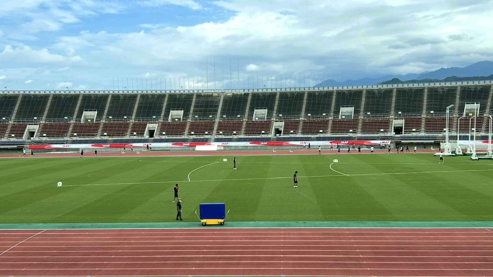
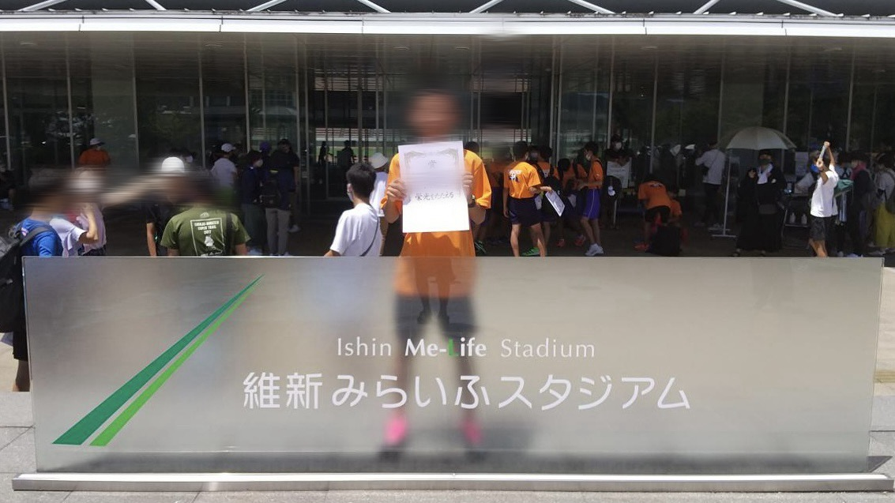
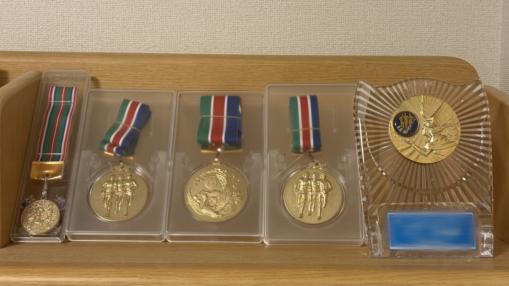

僕は中学生から高専3年生まで陸上競技を続けていました。
主に1500mを専門にしていました。たまに3000mや5000mも走ってました。
小学生の頃はバドミントンをやっていて、中学も入ろうと思っていましたが、
バドミントン部がなかったため、陸上部に入りました。
走るのは元々得意(好きではない)でしたが、中学校の先輩方が化け物で、
最初は先輩の女子数名と練習をしていました。
陸上の場合大きい大会は標準タイムが決められていて
そのタイムを超えないと出場することができないのですが、
もちろん1年生と2年生はそのような大きい大会には出ることができませんでした。
でも3年になるときにタイムがちょっとずつ伸びてきて、
そこからこのスポーツを本気で取り組もうってひとりで燃えてました。

練習を行っていた競技場
練習メニューが決められていて、それとプラスで練習をきつくするなど
他にも個人的に工夫してこのときから練習に取り組み始めました。
具体的に言うと、
・ペース走やポイント練のラスト一周を、決められたペースよりかなり早いタイムで走る
・アップのペースを1km3分40秒とか50秒にしてみる
大会前は2kmアップして1km3分30秒で次の1kmが3分20秒とかでやってました。
(そんなことをしている人見たことないので真似しないでください)
・できるだけ鼻呼吸。ペース走6000mとかは全部鼻呼吸でやってました。
大会も最初の1~2周は鼻呼吸でやってたと思います。
(これはまじで多分自分だけ効果ある感じかもしれない)
などをやっていました。
今まで10位に届くか届かんかくらいの順位が最高順位でしたが、
この練習が功を奏してか次の記録会で初めて全体で2位を取ることができました。
なんか嬉しかったですね。この時中3の始めだったこともあって
中国大会に出ることを目標にしてみました。
その次の春の県大会は初めて優勝することができました。
大嵐で開始も1時間遅れたこともあって、タイムはクソでしたが、流石に嬉しかったです。
中国大会につながる大会も3位以内で通過し、念願の中国大会に出場することができました。
そして、中国大会でも入賞することができました。
色々な県の人と話したり、走ったりできてとてもいい経験になりました。

中国大会
高専に入ってからは、膝の怪我や肺の病気の影響で思うように走れなくなりました。
自分で練習メニューを決めて練習し
毎年全国高専大会の出場権は得ていたものの、近くなると怪我やトラブルが重なり、
出場できないことが続きました。最終的に、3年生の時に退部することになりました。
ここまで読んでいただきありがとうございました。
陸上競技に興味を持っていただけたら幸いです。
